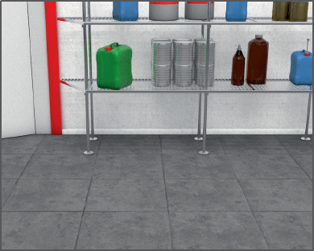
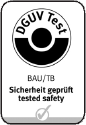
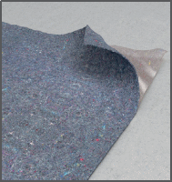

Fußböden |

Gegen Stolpern
Gegen Ausrutschen



| *) | Eingangsbereiche gemäß Nummer 0.1 sind die Bereiche, die durch Eingänge direkt aus dem Freien betreten werden und in die Feuchtigkeit von außen hereingetragen werden kann. |
| **) | Treppen, Rampen gemäß Nummer 0.3 und 0.5 sind diejenigen, auf die Feuchtigkeit von außen hineingetragen werden kann. |
07/2021